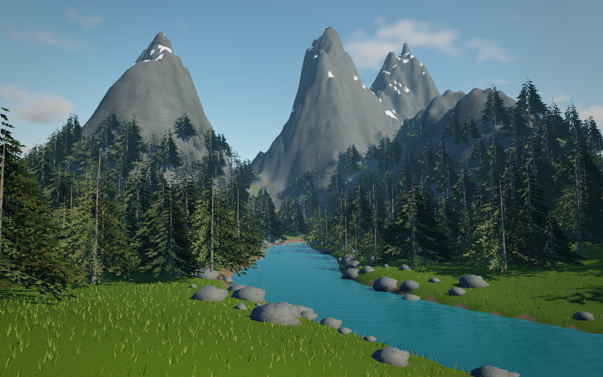

08 / SCENEВид с берегаAlpine Valley
Лесная долина · PhysicalSky · PBR
Что реализовано и проверено
662 хвойных дерева, шесть вариантов формы, каменистые берега, трава, горные хребты и снег. Штатные атмосфера и объёмные облака PhysicalSky. Два настоящих кадра Metal, 1600 × 1000, без ретуши.
Это авторская визуальная сцена: рельеф — glTF-геометрия, вода — статическая PBR-поверхность. NEREID, возраст, сезонность и веточные LOD здесь не демонстрируются. Проверка physical_sky: 1/1; Metal: ноль ошибок pipeline.
Подключение штатного неба в инструменте съёмки